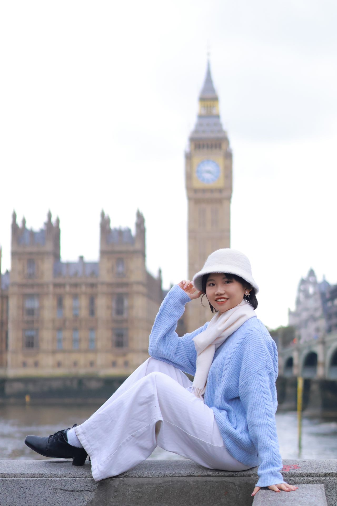

Miss Xinbing Luo
PhD student in Theoretical and Applied Linguistics
University of Cambridge
Welcome! I am a PhD student at the University of Cambridge.
I obtained my MPhil in Theoretical and Applied Linguistics at the University of Cambridge,
specializing in phonetics and psycholinguistics.
Interests
- Implicit learning
- Prosody
- Lexical tone
- Speech perception
- Second language acquisition
Education
- PhD in Theoretical and Applied Linguistics, 2023-Present
- MPhil in Theoretical and Applied Linguistics, 2022-2023
- BA in English, 2018-2022